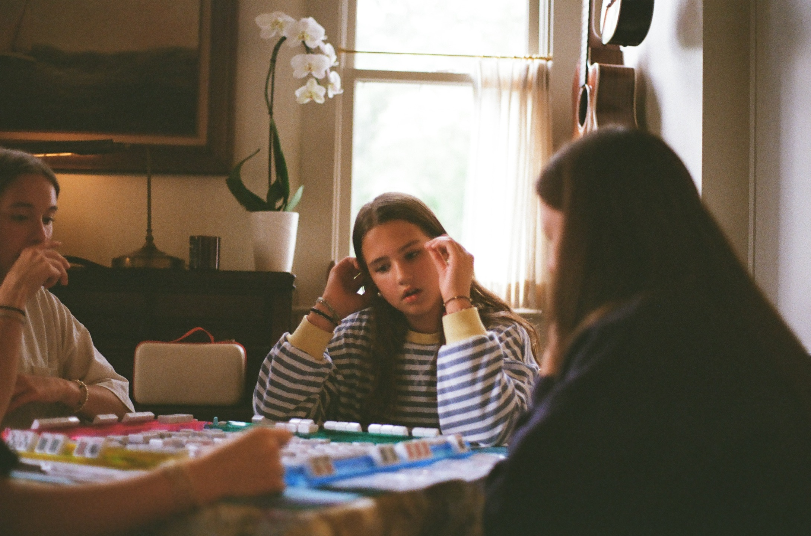
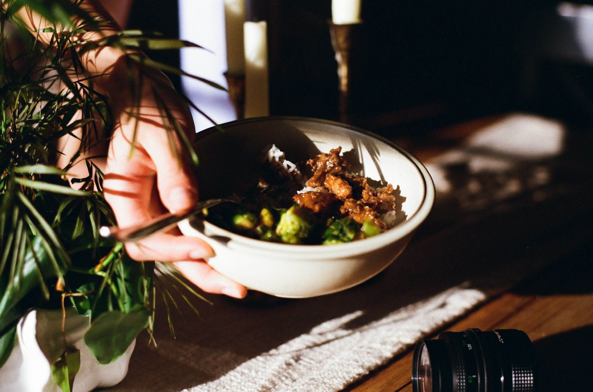
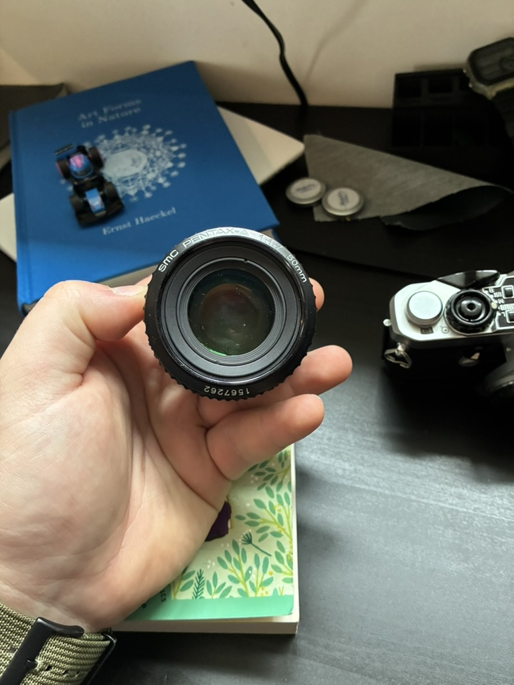
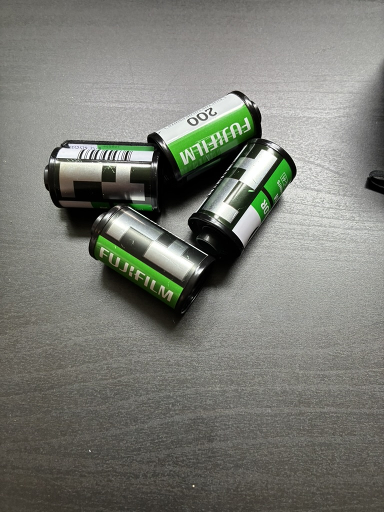

Hobby
A mix of film and digital — capturing the world one frame at a time.
I shoot on a Nikon D7000 DSLR — a hand-me-down kit from my mom that I've grown to love. I also shoot film with a vintage rangefinder camera and a SMC Pentax-A 50mm f/1.7 lens. My go-to film stock is Fujifilm 200.
There's something about film that digital just can't replicate — the grain, the colors, the intentionality of having limited shots.



